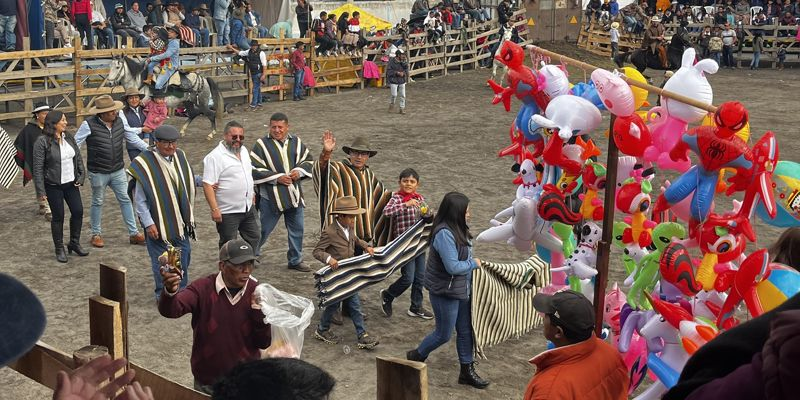

Fiestas en honor a la
Santísima Virgen de El Quinche
13 al 22 de noviembre de 2026
Lo más esperado
Gracias
Priostes 2026
Con su esfuerzo y generosidad hacen posible la fiesta de Nuestra Patrona.
Junto al Comité Promejoras y la Liga Deportiva Barrial Central Río Blanco Alto.
¿Quisiera una invitación digital como esta? Contáctese por WhatsApp al 0963212258
Servicios
Lugares de la fiesta

Gracias
A quienes, con su generosidad, hacen posible la fiesta de Nuestra Patrona.
Agradecimiento
“Santísima Virgen de El Quinche”, elevamos a ti nuestro más profundo agradecimiento por permitirnos rendirte este merecido homenaje, por los innumerables favores recibidos y por cubrirnos siempre con tu amorosa bendición; así como también a todos tus devotos y a cada una de las personas que, con su generosidad, hicieron posible realzar y celebrar con fe y alegría tu día.
Atentamente
Priostes Santísima Virgen de “El Quinche” 2026.
Comité Promejoras Río Blanco Alto.
Liga Deportiva Barrial Central Río Blanco Alto.